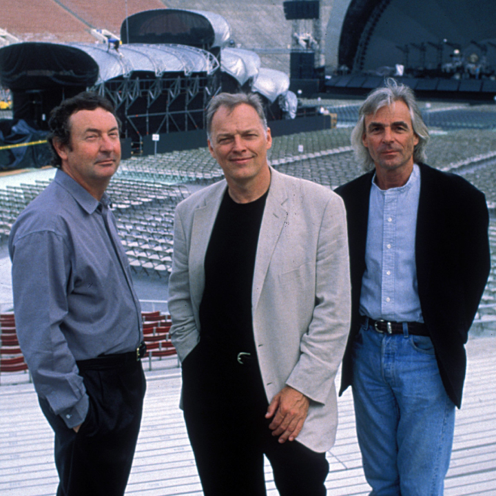

The Division Bell
Wydany: 28 marca 1994 | Wytwórnia: EMI Records
O albumie
"The Division Bell" to czternasty i ostatni studyjny album Pink Floyd, wydany w 1994 roku. Był pierwszym albumem od czasu "A Momentary Lapse of Reason" (1987), na którym zespół pracował w pełnym składzie — David Gilmour, Nick Mason i Rick Wright — bez udziału Rogera Watersa, który opuścił grupę w 1985 roku.
Album eksploruje tematy komunikacji, a raczej jej braku — zarówno w relacjach międzyludzkich, jak i w kontekście rozłamu w samym zespole. Tytuł nawiązuje do dzwonu parlamentarnego wzywającego posłów do głosowania, co jest metaforą konieczności podejmowania decyzji i dialogu. Teksty pisali głównie David Gilmour i jego ówczesna narzeczona, a później żona — Polly Samson.
Nagrywany w Britannia Row Studios w Londynie oraz na łodzi Astoria zakotwiczonej na Tamizie, album powstawał w atmosferze twórczego odrodzenia. Rick Wright po raz pierwszy od lat aktywnie współtworzył materiał, a jego wkład — szczególnie w utwór "Wearing the Inside Out" — był szeroko chwalony przez krytyków.
Okładka i oprawa wizualna

Oryginalna okładka albumu
Zaprojektowana przez Storm Thorgerson i Hipgnosis. Przedstawia dwie metalowe głowy zwrócone ku sobie — ich profile tworzą razem trzecią twarz. Symbolizuje to dialog, komunikację i dwoistość relacji międzyludzkich.

Członkowie Pink Floyd
Członkowie zespołu w czasach nagrywania albumu (od lewej): Nick Mason, David Gilmour, Richard Wright. Był to już kolejny album bez udziału Rodgera Watersa z powodu jego odejścia z grupy.
Lista utworów
| Nr. | Tytuł | Długość | Opis |
|---|---|---|---|
| 1. | Cluster One | 5:58 | Instrumentalne intro — spokojne, ambientowe, tworzone przez Gilmoura i Wrighta |
| 2. | What Do You Want from Me | 4:21 | Rockowy utwór o trudnościach w relacji; jeden z mocniejszych momentów albumu |
| 3. | Poles Apart | 7:04 | Refleksja nad dawnymi przyjaźniami — odczytywana jako aluzja do Syda Barretta i Rogera Watersa |
| 4. | Marooned | 5:29 | Instrumentalny utwór gitarowy Gilmoura; zdobył Grammy za Best Rock Instrumental Performance (1995) |
| 5. | A Great Day for Freedom | 4:17 | Utwór inspirowany upadkiem Muru Berlińskiego i rozczarowaniem po euforii wolności |
| 6. | Wearing the Inside Out | 6:49 | Jedyny utwór na albumie z wokalem Ricka Wrighta; tekst Anthony'ego Moore'a o izolacji emocjonalnej |
| 7. | Take It Back | 6:12 | Najbardziej radiowy utwór albumu; wydany jako singiel, dotarł do top 30 w UK |
| 8. | Coming Back to Life | 6:18 | Liryczny utwór Gilmoura o przebudzeniu i powrocie do życia po emocjonalnym odrętweniu |
| 9. | Keep Talking | 6:11 | Utwór z samplem głosu Stephena Hawkinga; apel o komunikację jako fundament człowieczeństwa |
| 10. | Lost for Words | 5:14 | Osobisty utwór Gilmoura — odczytywany jako odpowiedź na konflikt z Rogerem Watersem |
| 11. | High Hopes | 8:32 | Epickie zakończenie albumu; nostalgiczna refleksja nad przeszłością i utraconym idealizmem młodości |
Całkowity czas trwania: 65:05
Osiągnięcia i wyróżnienia
Sprzedaż
Ponad 15 milionów sprzedanych kopii na całym świecie
Billboard 200
Miejsce #1 w USA w tygodniu premiery; pozostał na liście przez ponad rok
Certyfikaty USA
3× Platyna (RIAA)
Grammy 1995
Best Rock Instrumental Performance za utwór "Marooned"
UK Charts
Miejsce #1 na listach sprzedaży w Wielkiej Brytanii
Trasa koncertowa
Towarzysząca trasa "The Division Bell Tour" była jedną z najdłuższych i najdroższych w historii rocka
Analiza kluczowych utworów
Marooned
Czysto instrumentalny utwór gitarowy, w którym David Gilmour pokazuje pełnię swojego mistrzostwa. Długie, śpiewne frazy gitarowe budują atmosferę melancholii i osamotnienia. Utwór zdobył Grammy w 1995 roku — jedyne Grammy w historii Pink Floyd przyznane za konkretny utwór.
Tytuł "Marooned" (ang. porzucony, odcięty od świata) idealnie oddaje nastrój kompozycji — poczucie izolacji wyrażone wyłącznie językiem muzyki, bez słów.
Keep Talking
Jeden z najbardziej rozpoznawalnych utworów albumu, zbudowany wokół sampla głosu Stephena Hawkinga — "For millions of years mankind lived just like the animals. Then something happened which unleashed the power of our imagination." Hawking wyraził zgodę na użycie swojego głosu i był zachwycony efektem.
Utwór jest hymnem na cześć komunikacji jako cechy wyróżniającej człowieka. Gilmour powiedział, że to jeden z jego ulubionych kawałków na albumie właśnie ze względu na to przesłanie.
High Hopes
Epickie, ośmiominutowe zamknięcie albumu. Tekst Gilmoura i Polly Samson to nostalgiczna podróż do Cambridge — miasta, w którym dorastał Gilmour i gdzie poznał Syda Barretta. Dzwony kościelne, rozbudowane solo gitarowe i narastająca orkiestracja tworzą jedno z najbardziej wzruszających zakończeń w dyskografii Pink Floyd.
Utwór jest odczytywany jako pożegnanie z młodością i utraconym idealizmem — a zarazem jako ostateczne podsumowanie całej ery Pink Floyd, bo album okazał się ostatnim studyjnym wydawnictwem zespołu przed "The Endless River" (2014).
Wearing the Inside Out
Jedyny utwór na albumie śpiewany przez Ricka Wrighta. Tekst Anthony'ego Moore'a opisuje emocjonalne wyczerpanie i izolację. Wright, który przez lata był odsuwany na margines przez Watersa, wrócił tu do pełnoprawnej roli artysty — i zrobił to z niezwykłą klasą.
Wielu krytyków uznaje ten utwór za jeden z najpiękniejszych momentów późnej twórczości Pink Floyd, a wokal Wrighta — ciepły i melancholijny — za jeden z jego najlepszych.
Ciekawostki
- Tytuł albumu pochodzi od dzwonu parlamentarnego w Izbie Gmin, który wzywa posłów do głosowania — metafora konieczności komunikacji i podejmowania decyzji
- Metalowe rzeźby z okładki zostały ustawione w Ely w Cambridgeshire i stały się lokalną atrakcją turystyczną
- Stephen Hawking osobiście wyraził entuzjazm dla swojego udziału w "Keep Talking" i powiedział, że jest z tego bardzo dumny
- Album był nagrywany częściowo na łodzi Astoria — pływającym studiu Davida Gilmoura zakotwiczonym na Tamizie
- Towarzysząca trasa "The Division Bell Tour" trwała od marca do październik 1994 i obejmowała 110 koncertów
- Na trasie koncertowej po scenie latał ogromny, nadmuchiwany świnia — nawiązanie do albumu "Animals"
- Koncerty z tej trasy zostały wydane jako album live "Pulse" (1995), który trafił na #1 w UK i USA
- Utwór "Poles Apart" zawiera aluzje zarówno do Syda Barretta ("Remember when you were young, you shone like the sun"), jak i do Rogera Watersa
- Album był remasterowany i wydany ponownie w 2011 roku w ramach box setu "Discovery"
- "The Division Bell" był ostatnim albumem studyjnym Pink Floyd z pełnymi tekstami — "The Endless River" (2014) był niemal w całości instrumentalny
Wpływ i dziedzictwo
"The Division Bell" zamknął pewną epokę w historii Pink Floyd. Był dowodem na to, że zespół potrafi tworzyć wartościową muzykę bez Rogera Watersa — choć krytycy byli podzieleni co do tego, czy nowe brzmienie dorównuje klasycznym albumom z lat 70.
Album przywrócił Ricka Wrighta do pełnoprawnej roli w zespole po latach marginalizacji. Gilmour wielokrotnie podkreślał, że obecność Wrighta była kluczowa dla brzmienia i atmosfery płyty. Wright zmarł w 2008 roku — "The Division Bell" pozostaje jego ostatnim pełnym albumem studyjnym.
Trasa koncertowa towarzysząca albumowi była jednym z największych widowisk w historii muzyki rozrywkowej — z laserami, projekcjami, nadmuchiwaną świnią i gigantycznym ekranem. Nagrania z tej trasy, wydane jako "Pulse", do dziś uchodzą za jeden z najlepszych albumów live w historii rocka progresywnego.